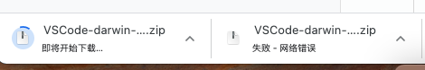
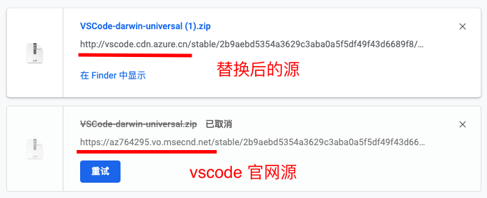

vscode 下载太慢，vscode 官网下载太慢解决方法
这篇文章发布于 2021/04/03，归类于 计算机基础与开发工具
标签：
vscode下载慢，vscode官网下载慢，vscode download slow
在 vscode 官网下载 vscode 时，发现非常慢，过会儿就下载失败了。如下图

为了解决这个问题，我们可以在下载中，找到对应的下载链接将 url 前面的域名修改为其他源，这样下载会很快。如下图

将 vscode 官网默认下载 url 前面的路径改为 vscode.cdn.azure.cn 即可